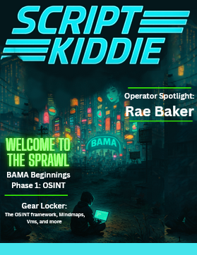

from pathlib import Path
# HTML, CSS, and JS for the glitchy console launch page
html_code = """
Script Kiddie Launch

"""
# Save the HTML file and instructions for the user
file_path = "/mnt/data/index.html"
Path(file_path).write_text(html_code)
file_path